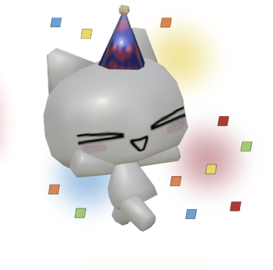

| Time | Subject | Mood |
|---|---|---|
| 7:30 - 8:15 AM | Physics | |
| 8:15 - 9:00 AM | Study Period | |
| 9:10 - 10:40 AM | English | |
| 10:40 - 12:10 PM | Social Science |  |
| 12:20 - 1:05 PM | Lunch |  |
| 1:05 - 1:50 PM | Computer Science | |
| 1:50 - 2:35 PM | Study Period |  |
| 2:45 - 4:15 PM | Mathematics |
My Opinion on the Friday Schedule
Friday is a day all students look forward to. Potassium’s Friday schedule is decent but there are two issues. The first issue is Physics being the first subject of the day. Physics is one of the most difficult subjects in Grade 9 and they put it early in the morning — when students are exhausted from waking up early which means they won’t pay attention as much. The second issue is that after the first study period, the next subjects are English and SocSci — both double periods with no break in between. The problem with this is that English, most of the time, is a subject that drains our energy while SocSci is a subject that requires all your attention as well as a lot of note-taking — tasks you need a lot of energy for. So instead of students paying attention to both subjects well, most of us struggle to keep our eyes open and focus on the task at hand.
Luckily enough, the rest of the day is usually relaxing unless there’s a major requirement like an exam. The last two subjects, ComSci and Math, are generally enjoyable for most of us in Potassium. After the last two subjects, we’re finally done with the school week. Now, all of us can get our well-deserved rest on the weekends and focus on non-academic related things like our social life. With the newfound motivation and energy found from the weekend, we can survive the next school week. Overall, while Potassium’s Friday schedule has its merits, it could benefit from some adjustments to better accommodate students’ needs and energy levels. Perhaps starting the day with a subject that requires less cognitive load, like a study period or a lighter subject, could help students ease into the day. Additionally, incorporating short breaks between double periods could provide students with the necessary time to recharge and refocus, ultimately enhancing their learning experience.